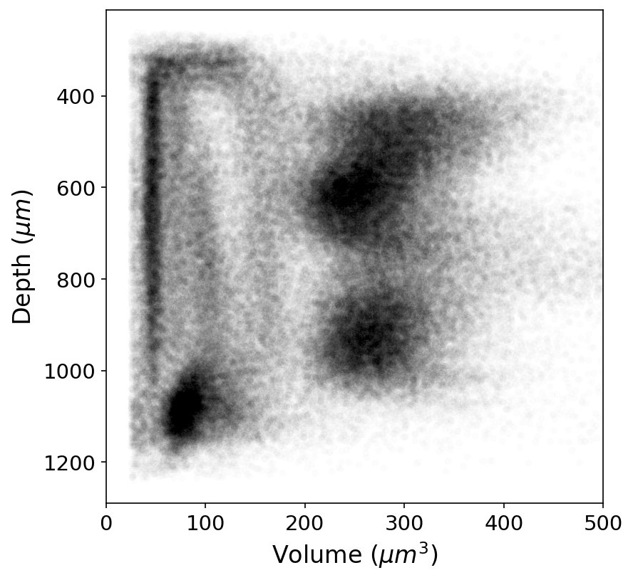
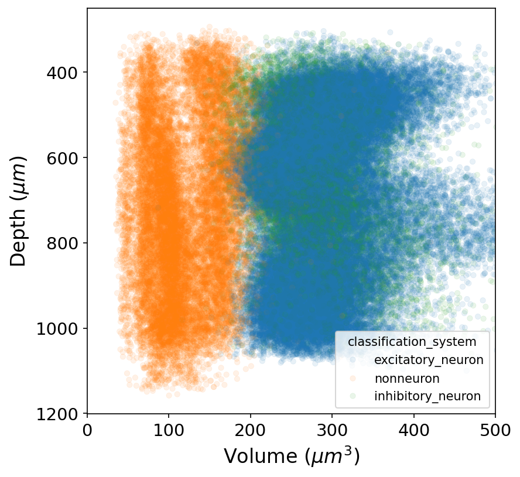
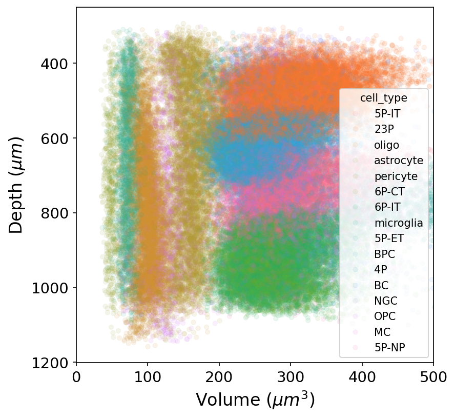
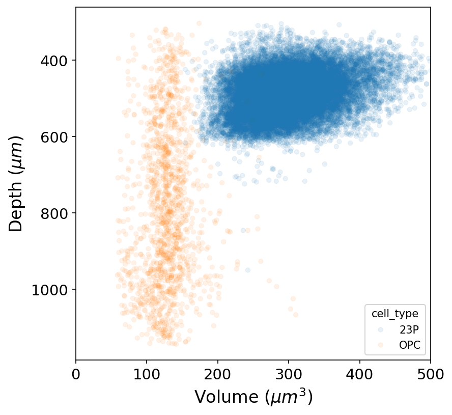
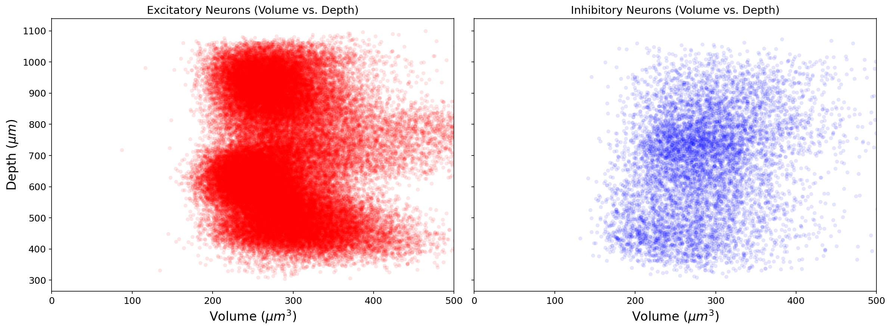
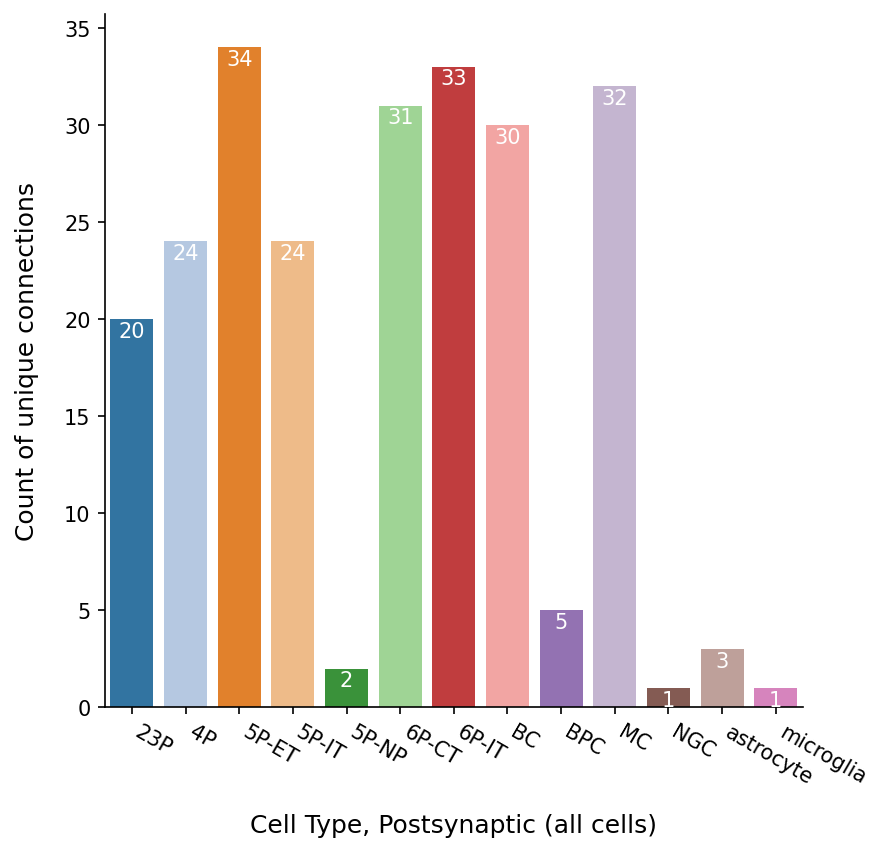
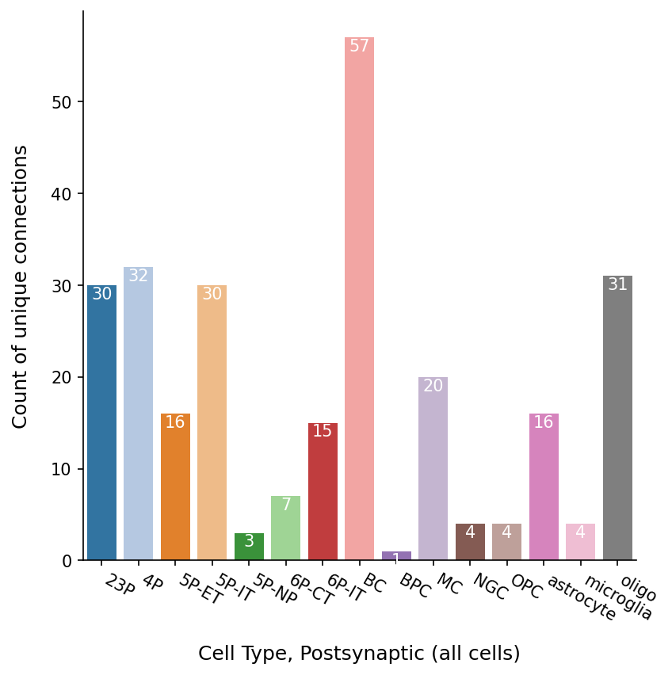

# @title For Colab: Run this cell once to install and load packages
%%capture
!pip install -q caveclient
!pip install -q skeleton_plotData Access MICrONS connectomics data Part II
The function of the nervous system arises out of a combination of the properties of individual neurons and the properties of how they are connected into a larger network. The central goal of connectomics is to produce complete maps of the connectivity of the nervous system with synaptic resolution and analyze them to better understand the organization, development, and function of the nervous system.
Electron Microscopy (EM) data enables morphological reconstruction of neurons and resolution of their synaptic connectivity . The MICrONS dataset is one of the largest volume EM datasets currently available, and spans all layers of mouse visual cortex. We will be using this dataset to query the connectivity between neurons in the visual cortex.
Further details about the dataset are available at MICrONS Explorer, and detailed data access examples at MICrONS Tutorials.
For neuroglancer link, see: https://spelunker.cave-explorer.org/#!gs://microns-static-links/mm3/layer5_thick_tufted.json
Workshop aims
- Understand what are the major classes of cell types in cortex
- Understand the basics of how synaptic connectivity is measured in EM connectomics
- Look at the relationship between the structure of networks and cell type connectivity
This workshop will cover:
- Reconstructions of individual neurons
- Connectivity of individual neurons
- Connectivity between cell types
Connectome Annotation Versioning Engine (CAVE)
This tutorial walks through the key functions needed to access the MICrONS dataset programmatically and highlights key resources within it. While this tutorial is written for the MICrONS dataset specifically, the underlying technology (CAVE) is being used for multiple connectomics dataset. So, the interface presented here can be used to query them as well.
The CAVEclient is a python library that facilitates communication with a CAVE system. For convenience, we also use the package skeleton_plot which handles rendering the precomputed skeletons.
# Import packages
from caveclient import CAVEclient
import pandas as pd
import numpy as np
from matplotlib import pyplot as plt
import seaborn as sns
import plotly.graph_objects as goCAVE account setup
In order to manage server traffic, every user needs to create a CAVE account and download a user token to access CAVE’s services programmatically. The CAVE infrastructure can be read about in more detail in the MICrONS Nature Package.
A Google account (or Google-enabled account) is required to create a CAVE account.
Go to: https://global.daf-apis.com/sticky_auth/settings/tokens to view a list of your existing tokens
If you have never made a token before, accept the terms of service and generate a token. Then copy the hash string and paste below
For Local environments
# Token Generation and Setup (Local)
CAVEclient.setup_token("https://global.daf-apis.com")
client = CAVEclient(datastack_name='minnie65_public')
# @title Initialize CAVE
# @markdown Requires your unique user token. Input user token
client = CAVEclient()
user_token = '5402c70e9a7a8cd8559439139fc2a6b2' # @param {type: "string"}
try:
client.auth.save_token(token=user_token, overwrite=True)
# Initialize a client for the production datastack.
client = CAVEclient(datastack_name='minnie65_public')
cg = client.chunkedgraph
print('Client initiation successful!')
except:
print('Oops! Token does not work')
print('Go to: https://global.daf-apis.com/auth/api/v1/user/token to view a list of your existing tokens')
print('If you have never made a token before: \n 1) go here: https://minnie.microns-daf.com/materialize/views/datastack/minnie65_public to accept terms of service \n 2) then go here https://global.daf-apis.com/auth/api/v1/create_token to create a new token.')Client initiation successful!Initialize CAVEclient with a datastack
Datasets in CAVE are organized as datastacks. These are a combination of an EM dataset, a segmentation and a set of annotations. The datastack for MICrONS public release is minnie65_public. When you instantiate your client with this datastack, it loads all relevant information to access it.
datastack_name = "minnie65_public"
client = CAVEclient(datastack_name)For each datastack, CAVE stores information about key data sources and parameters. These can be accessed through:
client.info.get_datastack_info(){'aligned_volume': {'id': 1,
'name': 'minnie65_phase3',
'display_name': 'Minnie65',
'description': "This is the second alignment of the IARPA 'minnie65' dataset, completed in the spring of 2020 that used the seamless approach.",
'image_source': 'precomputed://https://bossdb-open-data.s3.amazonaws.com/iarpa_microns/minnie/minnie65/em'},
'segmentation_source': 'graphene://https://minnie.microns-daf.com/segmentation/table/minnie65_public',
'skeleton_source': 'precomputed://middleauth+https://minnie.microns-daf.com/skeletoncache/api/v1/minnie65_public/precomputed/skeleton/',
'analysis_database': None,
'viewer_site': 'https://spelunker.cave-explorer.org/',
'synapse_table': 'synapses_pni_2',
'soma_table': 'nucleus_detection_v0',
'local_server': 'https://minnie.microns-daf.com',
'description': 'This is the publicly released version of the minnie65 volume and segmentation. ',
'viewer_resolution_x': 4.0,
'viewer_resolution_y': 4.0,
'viewer_resolution_z': 40.0,
'proofreading_status_table': None,
'cell_identification_table': None,
'proofreading_review_table': None}For instance, the synapse table is defined as synapses_pni_2 and the cell body table as nucleus_detection_v0.
Part 1: Neuron morphology: representing neurons as skeletons ( we already did this with the other co-syne notebook)
Often in thinking about neurons, you want to measure things along a linear dimension of a neuron.
However, the segmentation and meshes are a complex 3D shape that makes this non-trivial. There are methods for reducing the shape of a segmented neuron down to a linear tree like structure usually referred to as a skeleton. We have precalculated skeletons for a large number of cells in the dataset, and make the skeleton generation available on our server, on demand.
Note: The meshes you see in Neuroglancer are available to download through the python client cloud-volume, and can be loaded for analysis and visualization in other tools. This is useful for some types of analysis (and for making beautiful renders of neurons), but we will not cover that in this course.
Now we will select one neuron based on its root_id, the 18-digit number you see in neuroglancer, for example from: https://spelunker.cave-explorer.org/#!gs://microns-static-links/mm3/layer5_thick_tufted.json
Instructor modifications/additions: You can ask students to try this with different root ids or defined list from Dash Apps to look at and discuss morphology. If you dont have a list then students can also query proofread list and plot some skeletons (but this would need them to define a list.
Part 2: annotation tables and generally useful information
A datastack has a large number of tables that can be intimidating to traverse at first. CAVE provides several ways to find the tables you may want use. All database functions are under the client.materialize property. To see what tables are available, use the get_tables function:
client.materialize.get_tables()['synapses_pni_2',
'nucleus_detection_v0',
'vortex_manual_nodes_of_ranvier',
'bodor_pt_target_proofread',
'baylor_gnn_cell_type_fine_model_v2',
'nucleus_alternative_points',
'nucleus_functional_area_assignment',
'coregistration_auto_phase3_fwd_apl_vess_combined_v2',
'aibs_metamodel_mtypes_v661_v2_corrections',
'vortex_thalamic_proofreading_status',
'allen_column_mtypes_v2',
'proofreading_status_and_strategy',
'bodor_pt_cells',
'aibs_metamodel_mtypes_v661_v2',
'aibs_metamodel_celltypes_v661_corrections',
'vortex_microglia_proofreading_status',
'allen_v1_column_types_slanted_ref',
'multi_input_spine_predictions_ssa',
'aibs_column_nonneuronal_ref',
'nucleus_ref_neuron_svm',
'synapse_target_structure',
'myelin_auto_tags_2points',
'apl_functional_coreg_vess_fwd',
'vortex_axon_backtrace_column',
'cell_type_multifeature_combo',
'vortex_compartment_targets',
'baylor_log_reg_cell_type_coarse_v1',
'vortex_synapse_reattachment',
'coregistration_auto_phase3_fwd_v2',
'synapse_target_predictions_ssa_v2',
'gamlin_2023_mcs',
'l5et_column',
'pt_synapse_targets',
'vortex_peptidergic_proofreading_status',
'coregistration_manual_v4',
'cg_cell_type_calls',
'digital_twin_properties_bcm_coreg_v4',
'synapse_spine_mapping_v2',
'vortex_astrocyte_proofreading_status',
'digital_twin_properties_bcm_coreg_auto_phase3_fwd_v2',
'digital_twin_properties_bcm_coreg_apl_vess_fwd',
'gamlin_2023_mcs_met_types',
'vortex_manual_myelination_v0',
'synapse_target_predictions_ssa',
'aibs_metamodel_celltypes_v661']Query 1: Querying cells and their types
The basic querying logic of CAVE is client.materialize.query_table. This accepts at least a table as parameter. Let’s query the table of all automatically segmented nuclei:
nucleus_table_name = client.info.get_datastack_info()["soma_table"]
nucleus_df = client.materialize.query_table(nucleus_table_name)
nucleus_df.head(5)| id | created | superceded_id | valid | volume | pt_supervoxel_id | pt_root_id | pt_position | bb_start_position | bb_end_position | |
|---|---|---|---|---|---|---|---|---|---|---|
| 0 | 730537 | 2020-09-28 22:40:41.780734+00:00 | <NA> | True | 32.307938 | 0 | 0 | [381312, 273984, 19993] | [<NA>, <NA>, <NA>] | [<NA>, <NA>, <NA>] |
| 1 | 373879 | 2020-09-28 22:40:41.781788+00:00 | <NA> | True | 229.045044 | 96218056992431305 | 864691136090135607 | [228816, 239776, 19593] | [<NA>, <NA>, <NA>] | [<NA>, <NA>, <NA>] |
| 2 | 601340 | 2020-09-28 22:40:41.782714+00:00 | <NA> | True | 426.138 | 0 | 0 | [340000, 279152, 20946] | [<NA>, <NA>, <NA>] | [<NA>, <NA>, <NA>] |
| 3 | 201858 | 2020-09-28 22:40:41.783784+00:00 | <NA> | True | 93.753838 | 84955554103121097 | 864691135373893678 | [146848, 213600, 26267] | [<NA>, <NA>, <NA>] | [<NA>, <NA>, <NA>] |
| 4 | 600774 | 2020-09-28 22:40:41.785273+00:00 | <NA> | True | 135.189789 | 0 | 0 | [339120, 276112, 19442] | [<NA>, <NA>, <NA>] | [<NA>, <NA>, <NA>] |
Every annotation table has at least one position column (here: pt_position) which serves as anchor to the segmentation. These positions are automatically associated to the segmentation using pt_root_ids which can be thought of segment or cell IDs. Beyond positions and their associated IDs, every table stores metadata. For instance, the nucleus table contains the volume of each cell body.
Every table has a description and metadata attached to it that describes how the data was generated, limitations of it, and papers to cite when using it:
client.materialize.get_table_metadata(nucleus_table_name){'id': 89398,
'schema': 'nucleus_detection',
'valid': True,
'created': '2020-11-02T18:56:35.530100',
'aligned_volume': 'minnie65_phase3',
'table_name': 'nucleus_detection_v0',
'schema_type': 'nucleus_detection',
'user_id': '121',
'description': 'A table of nuclei detections from a nucleus detection model developed by Shang Mu, Leila Elabbady, Gayathri Mahalingam and Forrest Collman. Pt is the centroid of the nucleus detection. id corresponds to the flat_segmentation_source segmentID. Only included nucleus detections of volume>25 um^3, below which detections are false positives, though some false positives above that threshold remain. ',
'notice_text': None,
'reference_table': None,
'flat_segmentation_source': 'precomputed://https://bossdb-open-data.s3.amazonaws.com/iarpa_microns/minnie/minnie65/nuclei',
'write_permission': 'PRIVATE',
'read_permission': 'PUBLIC',
'last_modified': '2022-10-25T19:24:28.559914',
'segmentation_source': '',
'pcg_table_name': 'minnie3_v1',
'last_updated': '2026-06-17T08:10:01.110142',
'voxel_resolution': [4.0, 4.0, 40.0]}Location vs depth
As a first analysis, we will plot the depth location vs the size of each cell nucleus. query_table has additional parameters to modify the results and standardize returns that make such an analysis easier. * Using desired_resolution the resolution of all position columns can be defined in nanometers. * Using split_positions, position columns are separate * Using select_columns returns only the columns you know you are interested in. Try uncommenting this line to make the table more readable
nucleus_df = client.materialize.query_table(nucleus_table_name,
desired_resolution=[1000, 1000, 1000], # returned in um
split_positions=True,
# select_columns=['id','pt_root_id','volume','pt_position']
)
nucleus_df.head(5)| id | created | superceded_id | valid | volume | pt_position_x | pt_position_y | pt_position_z | bb_start_position_x | bb_start_position_y | bb_start_position_z | bb_end_position_x | bb_end_position_y | bb_end_position_z | pt_supervoxel_id | pt_root_id | |
|---|---|---|---|---|---|---|---|---|---|---|---|---|---|---|---|---|
| 0 | 730537 | 2020-09-28 22:40:41.780734+00:00 | <NA> | True | 32.307938 | 1525 | 1095 | 799 | <NA> | <NA> | <NA> | <NA> | <NA> | <NA> | 0 | 0 |
| 1 | 373879 | 2020-09-28 22:40:41.781788+00:00 | <NA> | True | 229.045044 | 915 | 959 | 783 | <NA> | <NA> | <NA> | <NA> | <NA> | <NA> | 96218056992431305 | 864691136090135607 |
| 2 | 601340 | 2020-09-28 22:40:41.782714+00:00 | <NA> | True | 426.138 | 1360 | 1116 | 837 | <NA> | <NA> | <NA> | <NA> | <NA> | <NA> | 0 | 0 |
| 3 | 201858 | 2020-09-28 22:40:41.783784+00:00 | <NA> | True | 93.753838 | 587 | 854 | 1050 | <NA> | <NA> | <NA> | <NA> | <NA> | <NA> | 84955554103121097 | 864691135373893678 |
| 4 | 600774 | 2020-09-28 22:40:41.785273+00:00 | <NA> | True | 135.189789 | 1356 | 1104 | 777 | <NA> | <NA> | <NA> | <NA> | <NA> | <NA> | 0 | 0 |
The data is organized such that the y axis is roughly aligned with depth (there is a 5 degree tilt that can be adjusted with the standard_transform package; we will ignore that here for simplicity).
The plot represents spatial organization of cell nuclei in the tissue
fig, ax = plt.subplots(figsize=(6, 6), dpi=150)
ax.tick_params(labelsize=14)
sns.scatterplot(data=nucleus_df, x="volume", y="pt_position_y", size=1, edgecolor=None, alpha=.01, color="k", ax=ax, legend=False)
ax.invert_yaxis()
ax.set_xlabel("Volume ($\mu m^3$c)", fontsize=16)
ax.set_ylabel("Depth ($\mu m$)", fontsize=16)
ax.set_xlim(0, 500)
plt.show()<>:5: SyntaxWarning: invalid escape sequence '\m'
<>:6: SyntaxWarning: invalid escape sequence '\m'
<>:5: SyntaxWarning: invalid escape sequence '\m'
<>:6: SyntaxWarning: invalid escape sequence '\m'
/tmp/ipykernel_1185/4161046026.py:5: SyntaxWarning: invalid escape sequence '\m'
ax.set_xlabel("Volume ($\mu m^3$)", fontsize=16)
/tmp/ipykernel_1185/4161046026.py:6: SyntaxWarning: invalid escape sequence '\m'
ax.set_ylabel("Depth ($\mu m$)", fontsize=16)
Cell type information
Identifying the putative ‘cell type’ from the EM morphology is a process that involves both manual and automatic classifications. Subsets of the dataset have been manually classified by anatomists at the Allen Institute, and these ground truth labels used to train and refine different automated ‘feature classifiers’ over time.
The diversity of manual and automated cell type classifications available in the dataset reflect the fact that definitions of ‘cell types’ in the dataset is an active area of research and must be contextualized against the purpose and resolution of the cell-typing being performed.
Manual Cell Types (V1 Column)
A subset of nucleus detections in a 100 um column (n=2204) in VISp were manually classified by anatomists at the Allen Institute into categories of cell subclasses, first distinguishing cells into classes of non-neuronal, excitatory and inhibitory. Excitatory cells were separated into laminar sub-classes (L23, L4), 3 sub-types of layer 5 cells (ET, IT, NP) and 2 classes of layer 6 cells (IT, CT). Inhibitory cells were classified into Bipolar (BPC), Basket (BC), Martinotti (MC), or Unsure (Unsure). Those neuronal calls are available from the CAVEclient under the table name allen_v1_column_types_slanted_ref which references the nucleus id of the cell.
Non-neuronal manual cells type calls enumerate astrocytes, microglia, pericytes, oligodendrocytes (oligo), and oligodendrocyte precursor cells (OPC), and area available in the table aibs_column_nonneuronal_ref.
manual_ct_df = client.materialize.query_table("allen_v1_column_types_slanted_ref",
desired_resolution=[1000, 1000, 1000],
split_positions=True,
merge_reference=False)
print(len(manual_ct_df))
manual_ct_df.head(5)1357| id | created | superceded_id | valid | target_id | classification_system | cell_type | |
|---|---|---|---|---|---|---|---|
| 0 | 1 | 2023-03-18 14:13:21.577622+00:00 | <NA> | True | 298945 | aibs_coarse_excitatory | 5P-IT |
| 1 | 2 | 2023-03-18 14:13:21.578408+00:00 | <NA> | True | 294715 | aibs_coarse_excitatory | 23P |
| 2 | 3 | 2023-03-18 14:13:21.579093+00:00 | <NA> | True | 264649 | aibs_coarse_inhibitory | MC |
| 3 | 4 | 2023-03-18 14:13:21.579790+00:00 | <NA> | True | 294489 | aibs_coarse_excitatory | 23P |
| 4 | 5 | 2023-03-18 14:13:21.580463+00:00 | <NA> | True | 292708 | aibs_coarse_excitatory | 23P |
Automated Cell Type classification (Soma-nucleus model)
Models were trained based upon the manual Column Neuron labels, as described in Elabbady et al. Nature 2025. Each nucleus was analyzed for a variety of features, and a model trained on and independent dataset to distinguish neurons from non-neuronal detections. Non-neuron detections include both glial cells and false positive detections. The nucleus segmentation detected 171,818 connected components of nucleus objects, this model detected 82K neurons. Evaluation of this model on 1,316 cells in the volume shows the model has a recall of 99.6% for neurons, and a precision of 96.9%. All nucleus detections and the results of this model can be queried and linked to the cellular segmentation using the CAVEclient with the table name nucleus_neuron_svm.
Combining those features with the nucleus features we trained a hierachical model on the manual labels to predict cell-classes and sub-classes across a large number of neurons. This is available as CAVE table aibs_metamodel_celltypes_v661.
ct_df = client.materialize.query_table("aibs_metamodel_celltypes_v661",
desired_resolution=[1000, 1000, 1000],
split_positions=True,
merge_reference=False,
)
print(len(ct_df))
ct_df.head(5)94014| id | created | superceded_id | valid | target_id | classification_system | cell_type | |
|---|---|---|---|---|---|---|---|
| 0 | 36916 | 2023-12-19 22:47:18.659864+00:00 | <NA> | True | 336365 | excitatory_neuron | 5P-IT |
| 1 | 1070 | 2023-12-19 22:38:00.472115+00:00 | <NA> | True | 110648 | excitatory_neuron | 23P |
| 2 | 1099 | 2023-12-19 22:38:00.898837+00:00 | <NA> | True | 112071 | excitatory_neuron | 23P |
| 3 | 13259 | 2023-12-19 22:41:14.417986+00:00 | <NA> | True | 197927 | nonneuron | oligo |
| 4 | 13271 | 2023-12-19 22:41:14.685474+00:00 | <NA> | True | 198087 | nonneuron | astrocyte |
Reference annotations contain target_id to merge them onto the table they target (here: the nucleus table). But do not worry, CAVE automatically merges them onto their target table by default (merge_reference=True):
ct_df = client.materialize.query_table("aibs_metamodel_celltypes_v661",
desired_resolution=[1000, 1000, 1000],
split_positions=True,
merge_reference=True,
# select_columns=['target_id','pt_root_id','volume','pt_position','cell_type','classification_system']
)
# remove segments with multiple cell bodies
ct_df = ct_df.drop_duplicates("pt_root_id", keep=False)
ct_df.head(5)| id | created | valid | target_id | classification_system | cell_type | id_ref | created_ref | valid_ref | volume | ... | pt_position_y | pt_position_z | bb_start_position_x | bb_start_position_y | bb_start_position_z | bb_end_position_x | bb_end_position_y | bb_end_position_z | pt_supervoxel_id | pt_root_id | |
|---|---|---|---|---|---|---|---|---|---|---|---|---|---|---|---|---|---|---|---|---|---|
| 0 | 36916 | 2023-12-19 22:47:18.659864+00:00 | True | 336365 | excitatory_neuron | 5P-IT | 336365 | 2020-09-28 22:42:48.966292+00:00 | True | 272.48819 | ... | 723 | 1083 | <NA> | <NA> | <NA> | <NA> | <NA> | <NA> | 93606511657924288 | 864691136274724621 |
| 1 | 1070 | 2023-12-19 22:38:00.472115+00:00 | True | 110648 | excitatory_neuron | 23P | 110648 | 2020-09-28 22:45:09.650639+00:00 | True | 328.533447 | ... | 518 | 1016 | <NA> | <NA> | <NA> | <NA> | <NA> | <NA> | 79385153184885329 | 864691135489403194 |
| 2 | 1099 | 2023-12-19 22:38:00.898837+00:00 | True | 112071 | excitatory_neuron | 23P | 112071 | 2020-09-28 22:43:34.088785+00:00 | True | 272.929413 | ... | 597 | 623 | <NA> | <NA> | <NA> | <NA> | <NA> | <NA> | 79035988248401958 | 864691136147292311 |
| 3 | 13259 | 2023-12-19 22:41:14.417986+00:00 | True | 197927 | nonneuron | oligo | 197927 | 2020-09-28 22:43:10.652649+00:00 | True | 91.308853 | ... | 744 | 1058 | <NA> | <NA> | <NA> | <NA> | <NA> | <NA> | 84529699506051734 | 864691135655940290 |
| 4 | 13271 | 2023-12-19 22:41:14.685474+00:00 | True | 198087 | nonneuron | astrocyte | 198087 | 2020-09-28 22:41:36.677186+00:00 | True | 161.74498 | ... | 763 | 1094 | <NA> | <NA> | <NA> | <NA> | <NA> | <NA> | 83756261929388963 | 864691135809440972 |
5 rows × 21 columns
The reference table added two additional data columns: classification_system and cell_type. The classification_system divides the cells into excitatitory and inhibitory neurons as well as non-neuronal cells. cell_type provides lower level cell annotations.
ct_df["classification_system"].value_counts()| count | |
|---|---|
| classification_system | |
| excitatory_neuron | 63810 |
| nonneuron | 18761 |
| inhibitory_neuron | 7863 |
ct_df["cell_type"].value_counts()| count | |
|---|---|
| cell_type | |
| 23P | 19656 |
| 4P | 14728 |
| 6P-IT | 11641 |
| 5P-IT | 7899 |
| astrocyte | 7133 |
| oligo | 6902 |
| 6P-CT | 6761 |
| BC | 3319 |
| MC | 2439 |
| microglia | 2410 |
| 5P-ET | 2167 |
| BPC | 1484 |
| OPC | 1471 |
| 5P-NP | 958 |
| pericyte | 845 |
| NGC | 621 |
Location vs depth + Cell type
Because the cell type table contains the information about the nuclei, we can use it to plot the locations of all cell bodies as well and label them by type.
fig, ax = plt.subplots(figsize=(6, 6), dpi=150)
ax.tick_params(labelsize=14)
sns.scatterplot(data=ct_df, x="volume", y="pt_position_y", s=20, edgecolor=None, alpha=.1, color="k", ax=ax,
legend=True, hue="classification_system")
ax.invert_yaxis()
ax.set_xlabel("Volume ($\mu m^3$)", fontsize=16)
ax.set_ylabel("Depth ($\mu m$)", fontsize=16)
ax.set_xlim(0, 500)
plt.show()<>:6: SyntaxWarning: invalid escape sequence '\m'
<>:7: SyntaxWarning: invalid escape sequence '\m'
<>:6: SyntaxWarning: invalid escape sequence '\m'
<>:7: SyntaxWarning: invalid escape sequence '\m'
/tmp/ipykernel_1185/4211805773.py:6: SyntaxWarning: invalid escape sequence '\m'
ax.set_xlabel("Volume ($\mu m^3$)", fontsize=16)
/tmp/ipykernel_1185/4211805773.py:7: SyntaxWarning: invalid escape sequence '\m'
ax.set_ylabel("Depth ($\mu m$)", fontsize=16)
Student Task 1:Can you create a volume vs depth plot based on cell types? Hint: Read the code block above.
fig, ax = plt.subplots(figsize=(6, 6), dpi=150)
ax.tick_params(labelsize=14)
sns.scatterplot(data=ct_df, x="volume", y="pt_position_y", s=20, edgecolor=None, alpha=.1, color="k", ax=ax,
legend=True, hue="cell_type")
ax.invert_yaxis()
ax.set_xlabel("Volume ($\mu m^3$)", fontsize=16)
ax.set_ylabel("Depth ($\mu m$)", fontsize=16)
ax.set_xlim(0, 500)
plt.show()<>:6: SyntaxWarning: invalid escape sequence '\m'
<>:7: SyntaxWarning: invalid escape sequence '\m'
<>:6: SyntaxWarning: invalid escape sequence '\m'
<>:7: SyntaxWarning: invalid escape sequence '\m'
/tmp/ipykernel_1185/1013495817.py:6: SyntaxWarning: invalid escape sequence '\m'
ax.set_xlabel("Volume ($\mu m^3$)", fontsize=16)
/tmp/ipykernel_1185/1013495817.py:7: SyntaxWarning: invalid escape sequence '\m'
ax.set_ylabel("Depth ($\mu m$)", fontsize=16)
Student Task 2:Can you create a volume vs depth plot for a single cell types? Hint: Read the code block above.
fig, ax = plt.subplots(figsize=(6, 6), dpi=150)
ax.tick_params(labelsize=14)
ct_df_filtered = ct_df[ct_df['cell_type'].isin(['23P', 'OPC'])]
sns.scatterplot(data=ct_df_filtered, x="volume", y="pt_position_y", s=20, edgecolor=None, alpha=.1, color="k", ax=ax,
legend=True, hue="cell_type")
ax.invert_yaxis()
ax.set_xlabel("Volume ($\\mu m^3$)", fontsize=16)
ax.set_ylabel("Depth ($\\mu m$)", fontsize=16)
ax.set_xlim(0, 500)
plt.show()
Student Task 3: Can you plot these data to look for distribution of inhibitory and excitatory cell types?
import matplotlib.pyplot as plt
import seaborn as sns
# Filter ct_df for excitatory and inhibitory cells
excitatory_cells_df = ct_df[ct_df['classification_system'] == 'excitatory_neuron']
inhibitory_cells_df = ct_df[ct_df['classification_system'] == 'inhibitory_neuron']
# Create subplots (1 row, 2 columns)
fig, axes = plt.subplots(1, 2, figsize=(16, 6), dpi=150, sharey=True) # sharey ensures both plots have the same y-axis scale
# Plot for excitatory cells
sns.scatterplot(
data=excitatory_cells_df,
x="volume",
y="pt_position_y",
s=20,
edgecolor=None,
alpha=.1,
color="red", # Assign a distinct color for excitatory cells
ax=axes[0],
legend=False # No need for legend as cell type is in title
)
axes[0].invert_yaxis()
axes[0].set_xlabel("Volume ($\mu m^3$)", fontsize=16)
axes[0].set_ylabel("Depth ($\mu m$)", fontsize=16)
axes[0].set_xlim(0, 500)
axes[0].set_title("Excitatory Neurons (Volume vs. Depth)", fontsize=14)
axes[0].tick_params(labelsize=12)
# Plot for inhibitory cells
sns.scatterplot(
data=inhibitory_cells_df,
x="volume",
y="pt_position_y",
s=20,
edgecolor=None,
alpha=.1,
color="blue", # Assign a distinct color for inhibitory cells
ax=axes[1],
legend=False # No need for legend as cell type is in title
)
axes[1].invert_yaxis()
axes[1].set_xlabel("Volume ($\mu m^3$)", fontsize=16)
axes[1].set_ylabel("") # y-label is shared, so make it empty for the second plot
axes[1].set_xlim(0, 500)
axes[1].set_title("Inhibitory Neurons (Volume vs. Depth)", fontsize=14)
axes[1].tick_params(labelsize=12)
plt.tight_layout() # Adjusts subplot params for a tight layout
plt.show()<>:24: SyntaxWarning: invalid escape sequence '\m'
<>:25: SyntaxWarning: invalid escape sequence '\m'
<>:43: SyntaxWarning: invalid escape sequence '\m'
<>:24: SyntaxWarning: invalid escape sequence '\m'
<>:25: SyntaxWarning: invalid escape sequence '\m'
<>:43: SyntaxWarning: invalid escape sequence '\m'
/tmp/ipykernel_1185/1215511890.py:24: SyntaxWarning: invalid escape sequence '\m'
axes[0].set_xlabel("Volume ($\mu m^3$)", fontsize=16)
/tmp/ipykernel_1185/1215511890.py:25: SyntaxWarning: invalid escape sequence '\m'
axes[0].set_ylabel("Depth ($\mu m$)", fontsize=16)
/tmp/ipykernel_1185/1215511890.py:43: SyntaxWarning: invalid escape sequence '\m'
axes[1].set_xlabel("Volume ($\mu m^3$)", fontsize=16)
Query 2: synapses and connectivity ( we focus on this in the first notebook)
While synapses are stored as any other table in the database, in this case synapses_pni_2, this table is much larger than any other table at more than 337 million rows:
client.materialize.get_annotation_count('synapses_pni_2')337312429While we can query the synapse table directly, this is generally not recommended. It is too large to query all at once. CAVE limits to queries to 500,000 rows at once and will display a warning when that happens. Here, we demonstrate this with the limit set to 10:
synapse_table_name = client.info.get_datastack_info()["synapse_table"]
syn_df = client.materialize.query_table(synapse_table_name, limit=10, desired_resolution=[1, 1, 1], split_positions=True)
syn_dfWARNING:caveclient.base:201 - "Limited query to 10 rows| id | created | superceded_id | valid | pre_pt_position_x | pre_pt_position_y | pre_pt_position_z | post_pt_position_x | post_pt_position_y | post_pt_position_z | ctr_pt_position_x | ctr_pt_position_y | ctr_pt_position_z | size | pre_pt_supervoxel_id | pre_pt_root_id | post_pt_supervoxel_id | post_pt_root_id | |
|---|---|---|---|---|---|---|---|---|---|---|---|---|---|---|---|---|---|---|
| 0 | 4456 | 2020-11-04 13:02:08.388988+00:00 | <NA> | True | 211448 | 409744 | 801440 | 211448 | 409744 | 801440 | 211612 | 410172 | 801400 | 2956.0 | 72063160986635724 | 864691135533713769 | 72063160986635724 | 864691135533713769 |
| 1 | 4503 | 2020-11-04 12:09:33.286834+00:00 | <NA> | True | 212456 | 408032 | 800360 | 212456 | 408032 | 800360 | 212168 | 408088 | 800400 | 344.0 | 72063092267156962 | 864691135087527094 | 72063092267156962 | 864691135087527094 |
| 2 | 4508 | 2020-11-04 13:02:13.024144+00:00 | <NA> | True | 212448 | 411696 | 801440 | 212448 | 411696 | 801440 | 212224 | 411800 | 801560 | 344.0 | 72063229706111827 | 864691135533713769 | 72063229706111827 | 864691135533713769 |
| 3 | 4568 | 2020-11-04 13:44:08.085705+00:00 | <NA> | True | 213392 | 415448 | 802920 | 213392 | 415448 | 802920 | 213096 | 415176 | 802880 | 13816.0 | 72133735889250131 | 864691134530418554 | 72133735889250131 | 864691134530418554 |
| 4 | 4581 | 2020-11-04 07:29:12.917622+00:00 | <NA> | True | 213552 | 417184 | 800800 | 213552 | 417184 | 800800 | 213240 | 417080 | 801080 | 10436.0 | 72133804608718799 | 864691134745062676 | 72133804608718799 | 864691134745062676 |
| 5 | 4582 | 2020-11-04 13:02:17.694701+00:00 | <NA> | True | 212880 | 409120 | 801440 | 212880 | 409120 | 801440 | 213016 | 408832 | 801520 | 1344.0 | 72063160986636743 | 864691135533713769 | 72063160986636743 | 864691135533713769 |
| 6 | 4588 | 2020-11-04 12:20:12.290593+00:00 | <NA> | True | 213200 | 421120 | 805520 | 213200 | 421120 | 805520 | 213064 | 421000 | 805600 | 7128.0 | 72133942047682150 | 864691134609767690 | 72133942047682150 | 864691134609767690 |
| 7 | 4590 | 2020-11-04 13:20:01.875310+00:00 | <NA> | True | 213504 | 406440 | 805160 | 213504 | 406440 | 805160 | 213336 | 406596 | 805200 | 6572.0 | 72133461011344162 | 864691135091400630 | 72133461011344162 | 864691135091400630 |
| 8 | 4606 | 2020-11-04 07:24:39.038223+00:00 | <NA> | True | 213384 | 413792 | 800800 | 213384 | 413792 | 800800 | 213256 | 413976 | 801040 | 2100.0 | 72133667169766499 | 864691134609872906 | 72133667169766499 | 864691134609872906 |
| 9 | 4611 | 2020-11-04 07:24:37.800341+00:00 | <NA> | True | 213336 | 415304 | 800960 | 213336 | 415304 | 800960 | 213192 | 415604 | 800960 | 492.0 | 72133735889243887 | 864691134609872906 | 72133735889243887 | 864691134609872906 |
Instead, you have several options for querying cells of interest:
- Specifying the
pre_ids - Specifying the
post_ids - Searching within a
bounding_box - Using a combination of the above to iterate through large numbers of neurons
Query synapses given pt_root_id of interest
The synapse_query function allows you to query the synapse table in a more convenient way than most other tables. In particular, the pre_ids and post_ids let you specify which root id (or collection of root ids) you want to query, with pre_ids indicating the collection of presynaptic neurons and post_ids the collection of postsynaptic neurons.
Using both pre_ids and post_ids in one call is effectively a logical AND, returning only those synapses from neurons in the list of pre_ids that target neurons in the list of post_ids.
Let’s look at our example cell from before:
# Pick example cell
root_id = 864691135572530981
# Query synapse table with synapse_query()
input_syn_df = client.materialize.synapse_query(post_ids=root_id)
print(f"Total number of input synapses for {root_id}: {len(input_syn_df)}")
input_syn_df.head()Total number of input synapses for 864691135572530981: 7135/usr/local/lib/python3.12/dist-packages/caveclient/materializationengine.py:1744: RuntimeWarning: Engine has switched to 'python' because numexpr does not support extension array dtypes. Please set your engine to python manually.
return df.query("pre_pt_root_id!=post_pt_root_id")| id | created | superceded_id | valid | size | pre_pt_supervoxel_id | pre_pt_root_id | post_pt_supervoxel_id | post_pt_root_id | pre_pt_position | post_pt_position | ctr_pt_position | |
|---|---|---|---|---|---|---|---|---|---|---|---|---|
| 0 | 456611088 | 2020-11-04 06:48:59.326085+00:00 | <NA> | True | 5140.0 | 113239596703504810 | 864691135479280180 | 113239596703516355 | 864691135572530981 | [352662, 182250, 21256] | [352700, 182240, 21263] | [352668, 182240, 21257] |
| 1 | 415745273 | 2020-11-04 06:48:59.036865+00:00 | <NA> | True | 14532.0 | 110214290325399938 | 864691135761573174 | 110214290325398722 | 864691135572530981 | [330584, 186192, 20184] | [330508, 186140, 20186] | [330530, 186164, 20184] |
| 2 | 461382317 | 2020-11-04 06:49:11.546047+00:00 | <NA> | True | 424.0 | 114016607357442246 | 864691136359281271 | 114016607357447165 | 864691135572530981 | [358370, 204474, 17891] | [358422, 204472, 17897] | [358376, 204448, 17898] |
| 3 | 453650601 | 2020-11-04 06:49:11.014137+00:00 | <NA> | True | 4312.0 | 113239734075106385 | 864691136207175091 | 113239734075097000 | 864691135572530981 | [352322, 183200, 20539] | [352414, 183226, 20534] | [352398, 183246, 20534] |
| 4 | 425855837 | 2020-11-04 06:49:08.606602+00:00 | <NA> | True | 7784.0 | 111270646121891164 | 864691135884370840 | 111270646121907774 | 864691135572530981 | [338014, 192640, 20294] | [338110, 192602, 20309] | [338117, 192649, 20302] |
Getting the outputs of the cell is similar, except we use the argument pre_ids
# Query synapse table with synapse_query()
output_syn_df = client.materialize.synapse_query(pre_ids=root_id)
print(f"Total number of output synapses for {root_id}: {len(output_syn_df)}")
output_syn_df.head()Total number of output synapses for 864691135572530981: 443/usr/local/lib/python3.12/dist-packages/caveclient/materializationengine.py:1744: RuntimeWarning: Engine has switched to 'python' because numexpr does not support extension array dtypes. Please set your engine to python manually.
return df.query("pre_pt_root_id!=post_pt_root_id")| id | created | superceded_id | valid | size | pre_pt_supervoxel_id | pre_pt_root_id | post_pt_supervoxel_id | post_pt_root_id | pre_pt_position | post_pt_position | ctr_pt_position | |
|---|---|---|---|---|---|---|---|---|---|---|---|---|
| 0 | 395248437 | 2020-11-04 06:48:59.876707+00:00 | <NA> | True | 9532.0 | 108524685221986350 | 864691135572530981 | 108524685221977287 | 864691135490110266 | [318184, 180454, 25315] | [318286, 180522, 25305] | [318246, 180518, 25311] |
| 1 | 440616430 | 2020-11-04 06:49:10.903020+00:00 | <NA> | True | 4432.0 | 112185646021939898 | 864691135572530981 | 112185646021939884 | 864691134992343215 | [344966, 194038, 20972] | [344942, 194054, 20975] | [344934, 194048, 20971] |
| 2 | 439592768 | 2020-11-04 06:49:11.156743+00:00 | <NA> | True | 576.0 | 112183034412923018 | 864691135572530981 | 112183034412912746 | 864691136423679279 | [344800, 174436, 18504] | [344704, 174410, 18491] | [344778, 174374, 18497] |
| 3 | 454114788 | 2020-11-04 06:49:46.278849+00:00 | <NA> | True | 2356.0 | 113309415020761559 | 864691135572530981 | 113379783764920953 | 864691135043239167 | [353300, 178366, 16119] | [353334, 178320, 16124] | [353326, 178320, 16120] |
| 4 | 429055494 | 2020-11-04 06:53:24.912290+00:00 | <NA> | True | 16296.0 | 110989034444418846 | 864691135572530981 | 110989034444425675 | 864691135774556861 | [336166, 191682, 25914] | [336260, 191558, 25917] | [336184, 191638, 25915] |
Note that synapse queries always return the list of every synapse between the neurons in the query, even if there are multiple synapses between the same pair of neurons.
A common pattern to generate a list of connections between unique pairs of neurons is to group by the root ids of the presynaptic and postsynaptic neurons and then count the number of synapses between them. For example, use pandas.groupby() to get the number of synapses from this neuron onto every other neuron:
# get count of synapses between presynaptic and postsynaptic partners
output_connectivity = (output_syn_df.groupby(['pre_pt_root_id', 'post_pt_root_id'])
.count()[['id']]
.rename(columns={'id': 'syn_count'})
.sort_values( by='syn_count', ascending=False,)
)
output_connectivity
# Note that the 'id' part here is just a way to quickly extract one column. This could be any of the remaining column names,
# but `id` is often convenient because it is common to all tables.| syn_count | ||
|---|---|---|
| pre_pt_root_id | post_pt_root_id | |
| 864691135572530981 | 864691136051830771 | 12 |
| 864691135918652336 | 7 | |
| 864691135468408402 | 5 | |
| 864691136741629020 | 5 | |
| 864691135593547307 | 4 | |
| ... | ... | |
| 864691135477016488 | 1 | |
| 864691135476861096 | 1 | |
| 864691135475582784 | 1 | |
| 864691135474714944 | 1 | |
| 864691135508907273 | 1 |
368 rows × 1 columns
Student task 4: Can you create a dataframe/list of inputs to this specific neuron?
# get count of synapses between presynaptic partners
input_connectivity = (input_syn_df.groupby(['pre_pt_root_id', 'post_pt_root_id'])
.count()[['id']]
.rename(columns={'id': 'syn_count'})
.sort_values( by='syn_count', ascending=False,)
)
output_connectivity
# Note that the 'id' part here is just a way to quickly extract one column. This could be any of the remaining column names,
# but `id` is often convenient because it is common to all tables.| syn_count | ||
|---|---|---|
| pre_pt_root_id | post_pt_root_id | |
| 864691135918652336 | 864691135572530981 | 14 |
| 864691136928672735 | 864691135572530981 | 9 |
| 864691135014295128 | 864691135572530981 | 8 |
| 864691136010645411 | 864691135572530981 | 7 |
| 864691135748190397 | 864691135572530981 | 7 |
| ... | ... | ... |
| 864691135461776068 | 864691135572530981 | 1 |
| 864691135461755415 | 864691135572530981 | 1 |
| 864691135461674692 | 864691135572530981 | 1 |
| 864691135461359895 | 864691135572530981 | 1 |
| 864691135464551732 | 864691135572530981 | 1 |
6446 rows × 1 columns
Pivot the input_connectivity table to create a matrix
Rows will be pre_pt_root_id and the single column will be post_pt_root_id
input_adj_mat = input_connectivity.pivot_table(index=“pre_pt_root_id”, columns=“post_pt_root_id”, values=“syn_count”, aggfunc=‘sum’).fillna(0)
Visualize the input adjacency matrix as a heatmap
fig, ax = plt.subplots(figsize=(8, 10), dpi=150) sns.heatmap(input_adj_mat, cmap=“viridis”, xticklabels=[root_id], # Only one column: the target root_id yticklabels=False, # Too many y-labels to display meaningfully cbar_kws={‘label’: ‘Synapse Count’}, ax=ax, square=False # Not a square matrix, so no need for square aspect ) ax.set_ylabel(“Presynaptic Root ID”) ax.set_xlabel(“Postsynaptic Root ID”) ax.set_title(f”Adjacency Plot: Inputs to Neuron {root_id}“) plt.show()
Plot output target distribution
Taking this connectivity information from one neuron, quantify the synapses it makes onto all cell types. This is the same process that happens to make the Dash App plots.
Note: here we work with only unique connections, even where there is more than one synapse between them
# First, find the unique postsynaptic partners
unique_postsyn_partners = output_syn_df.post_pt_root_id.unique()
# Select the cell types of the postsynaptic partners
ct_postsyn_partners = ct_df.loc[ct_df.pt_root_id.isin(unique_postsyn_partners)]
# Make a bar plot of the connections to the postsynaptic cell types
ct_summary = (pd.DataFrame(ct_postsyn_partners.value_counts('cell_type'))
.sort_values('cell_type')
.reset_index()
)
f, ax = plt.subplots(1,1, figsize=(6, 6),dpi=150)
sns.barplot(ct_summary, x='cell_type', y='count', hue='cell_type', palette='tab20', ax=ax)
# Add labels to the bars
for i, r in ct_summary.iterrows():
ax.text(i, r['count']-.1, round(r['count'], 2),
color='white', ha='center', va='top')
plt.ylabel('Count of unique connections', fontsize = 12, labelpad=12)
plt.xlabel('Cell Type, Postsynaptic (all cells)', fontsize = 12, labelpad=12)
plt.xticks(rotation=-30, ha='left')
sns.despine()
plt.show()
Student task 5: Can you create a similar graph for inputs? Copy-paste is allowed and encouraged
# First, find the unique postsynaptic partners
unique_presyn_partners = input_syn_df.pre_pt_root_id.unique()
# Select the cell types of the postsynaptic partners
ct_presyn_partners = ct_df.loc[ct_df.pt_root_id.isin(unique_presyn_partners)]
# Make a bar plot of the connections to the postsynaptic cell types
ct_summary = (pd.DataFrame(ct_presyn_partners.value_counts('cell_type'))
.sort_values('cell_type')
.reset_index()
)
f, ax = plt.subplots(1,1, figsize=(6, 6),dpi=150)
sns.barplot(ct_summary, x='cell_type', y='count', hue='cell_type', palette='tab20', ax=ax)
# Add labels to the bars
for i, r in ct_summary.iterrows():
ax.text(i, r['count']-.1, round(r['count'], 2),
color='white', ha='center', va='top')
plt.ylabel('Count of unique connections', fontsize = 12, labelpad=12)
plt.xlabel('Cell Type, Postsynaptic (all cells)', fontsize = 12, labelpad=12)
plt.xticks(rotation=-30, ha='left')
sns.despine()
plt.show()
Advanced Neuroglancer
You can actually overlay many of these properties in neuroglancer, including:
- Skeletons: https://spelunker.cave-explorer.org/#!middleauth+https://global.daf-apis.com/nglstate/api/v1/6025750544121856
- Nucleus segmentation: https://spelunker.cave-explorer.org/#!middleauth+https://global.daf-apis.com/nglstate/api/v1/4846103861133312
- Cell Types: https://spelunker.cave-explorer.org/#!middleauth+https://global.daf-apis.com/nglstate/api/v1/5505896963637248
- Proofreading Status: https://spelunker.cave-explorer.org/#!middleauth+https://global.daf-apis.com/nglstate/api/v1/5626062229733376
- Synapses: https://spelunker.cave-explorer.org/#!middleauth+https://global.daf-apis.com/nglstate/api/v1/6395755509055488
And any combination thereof. Tip: drag layers between diferent neuroglancer windows to view overlaid